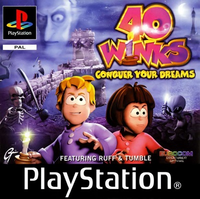

40 Winks: Conquer Your Dreams featuring Ruff & Tumble™

Год выпуска: 1999
Жанр: Action/Platformer
Разработчик: Eurocom
Издательство: GT Interactive
Язык Интерфейса: Русский
Язык озвучки: Русский
Язык субтитров: Русский
Код диска: SLES01937
Формат: pkg
Описание:
40 Winks - классический трехмерный платформер, выпущенный на первой PlayStation. Геймплей здесь заключается в прыжках между платформами, избегании ловушек и преодолении врагов, блуждающих по карте. Кроме того, игрок собирает объекты, размещенные на карте, и титульные подмигивания. Ерш и Тамбл путешествуют в шести разных мирах. В конце каждого из них братьев и сестер ожидает могущественный босс. Игра предлагает игроку возможность превращать героев в других существ (в зависимости от того, играем ли мы мальчиком или девочкой), что дает нам уникальные дополнительные навыки.